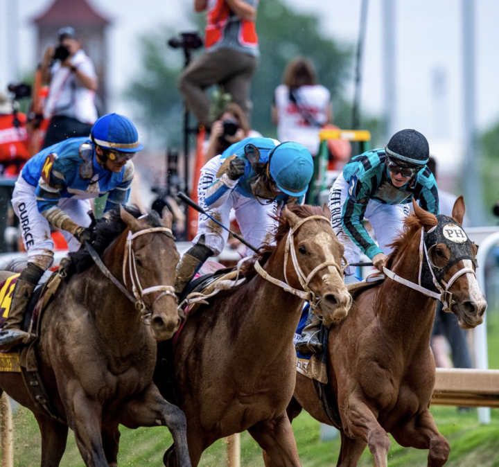
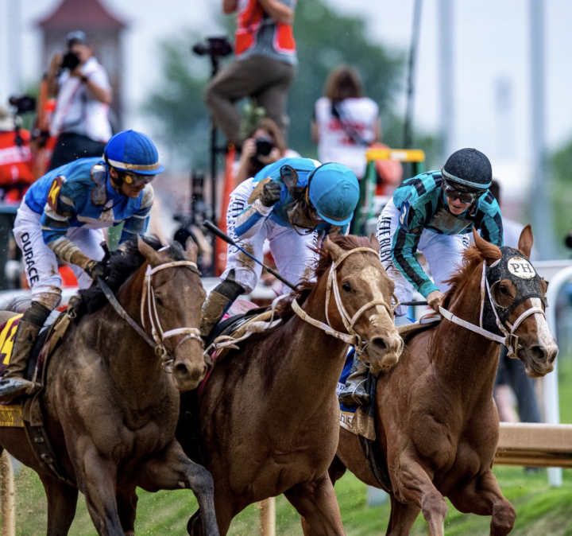
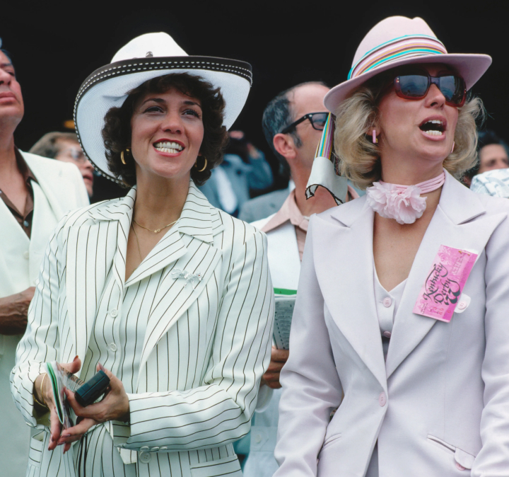
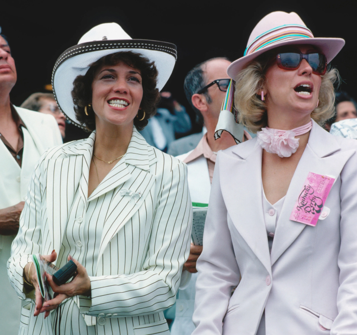

There are a few American Sporting events with the history and popularity of the Kentucky Derby. It’s rich traditions sipping a mint julep, donning a beautiful hat, and joining fellow race fans in singing “My Old Kentucky Home” transcend the Kentucky Derby from just a sporting event, making it a celebration of southern culture and a true icon of Americana. The Kentucky Derby is the longest running sporting event in the United States, dating back to 1875. The race is often referred to as “The Run for the Roses” and has continuously produced “the most exiting two minutes in sports”; uninterrupted, even when coinciding with profound historical events like The Great Depression and World Wars I & II.
As with any major event, the Kentucky Derby has undergone various changes over the course of three centuries. From shortening the distance of the race, the introduction of traditions like draping the winning horse in garland of roses, to the growing size of Derby crowds, the Kentucky Derby has embraced the change of time, while honoring the integrity of the spectacle race set forth by Meriwether Lewis Clark.
 



 


With a crown of more than 150,000 people, the Kentucky Derby has been described by Forbes as one of the “Greatest Bucket-List Sporting Events” in America. We want you to have the best experience at our event, so we’ve put together some helpful suggestions for your first trip to the Kentucky Derby!
The atmosphere of the Kentucky Derby is festive and fueled by adrenaline, offering some of the best people - watching opportunities you’ll ever have. So, as you plan your trip to Churchill Downs on Kentucky Derby weekend, here are some top - notch places to stay.

For a comprehensive listing of Louisville hotels, transportation, attractions, and other travel planning tools, visit www.visitlouisville.com, provided by the Louisville Convention & Visitors Bureau.